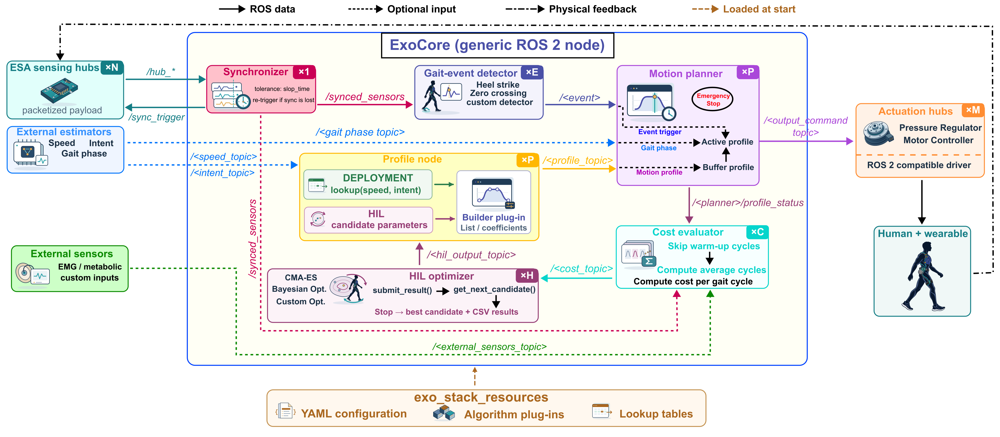

ExoStack / ROS 2 interfaces
ROS 2 interfaces
Every ExoStack node, the topics it subscribes to and publishes, and the layout of each message.
ExoStack is a set of ROS 2 nodes that talk over topics. This section lists, node by node, what each subscribes to and publishes, and, under Message layouts, what every element of every message means. Click a message type to open its layout.

Nodes
| Node | Name at run time | Executable | Instances |
|---|---|---|---|
| ESA sensing hub | setupNode(name) | sketch on the board | ×N |
| ESA actuation hub | setupNode(name) | sketch on the board | ×M |
| Synchronizer | generic_sync_node | sync | ×1 |
| Gait-event detector | <event>_event | gait_event_detector | ×E |
| Profile node | <profile>_profile | actuation_profile | ×P |
| Motion planner | <planner>_planner | mplanner | ×P |
| Cost evaluator | <profile>_cost | cost | ×C |
| HIL optimizer | <profile>_hil | hil | ×H |
Placeholders are the keys of the YAML entries; launch files start one node per entry. ×C counts the profiles that define a cost and ×H those in HIL mode; both are at most P.
All topics
| Topic | Message type | From → to |
|---|---|---|
/<hub topic> | sensor_msgs/LaserScanhub layout | sensing hub → synchronizer |
/sync_trigger | std_msgs/Int32sync trigger layout | synchronizer → every hub |
/synced_sensors | std_msgs/Float32MultiArraysynchronized channels layout | synchronizer → detectors, cost evaluators |
/<event topic> | std_msgs/Int32gait event layout | detector → planner |
/<speed_topic>, /<intent_topic> | std_msgs/Float32estimator input layout | estimator → profile node |
/<gait_phase_topic> | std_msgs/Float32estimator input layout | estimator → planner |
/<profile_topic> | std_msgs/Float32MultiArrayprofile layout | profile node → planner |
/<output_topic> | std_msgs/Float32set-point layout | planner → actuation hub or ROS 2 driver |
/<planner>/profile_status | std_msgs/Float32MultiArrayprofile status layout | planner → cost evaluator |
/<planner>/manual_mode, …/manual_cmd | std_msgs/Int32manual override layout | PASE or you → planner |
/<cost_topic> | std_msgs/Float32MultiArraycost layout | cost evaluator → HIL optimizer |
/<hil_output_topic> | std_msgs/Float32MultiArrayHIL candidate layout | HIL optimizer → profile node |
/<external_sensors_topic> | std_msgs/Float32MultiArrayexternal sensors layout | your sensor node → cost evaluator |
/<additional_gait_marker_topic> | std_msgs/Int32gait marker layout | your node → cost evaluator |
Conventions
- Names in angle brackets are set in a YAML file or a sketch call; each node page lists where. Only
/sync_triggerand/<planner>/…follow fixed patterns. - Quality of service: every ExoStack topic is best-effort, which suits periodic sensor and command streams. A node of yours may publish best-effort or reliable; to subscribe to an ExoStack topic, use best-effort.
- The candidate number k is the first element of the profile, status, cost and HIL messages. It ties a measured cost to the parameters that produced it: the cost evaluator counts only cycles of the candidate in
profile_status, and the optimizer accepts only a cost carrying the k it proposed.
Inspecting the graph
terminal
ros2 node list # e.g. /generic_sync_node, /right_heel_strike_event, /profile1_hil ros2 topic list -t # topics with their types ros2 topic echo /right_knee_flexion/profile_status ros2 topic hz /hub_right # publication rate of a hub ros2 topic info -v /synced_sensors # publishers, subscribers and QoS